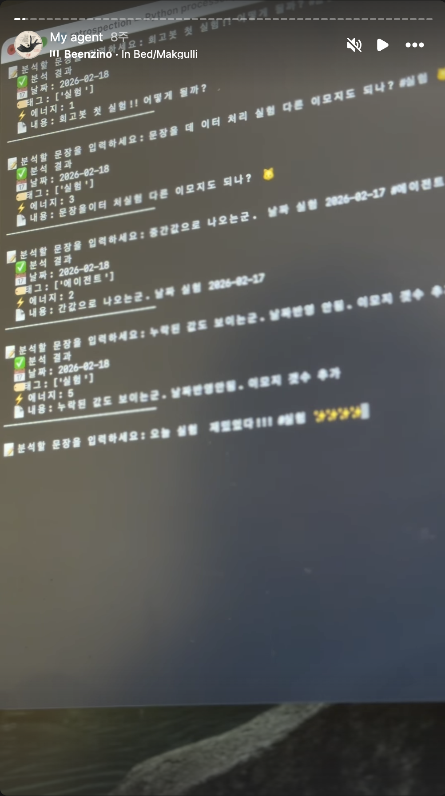
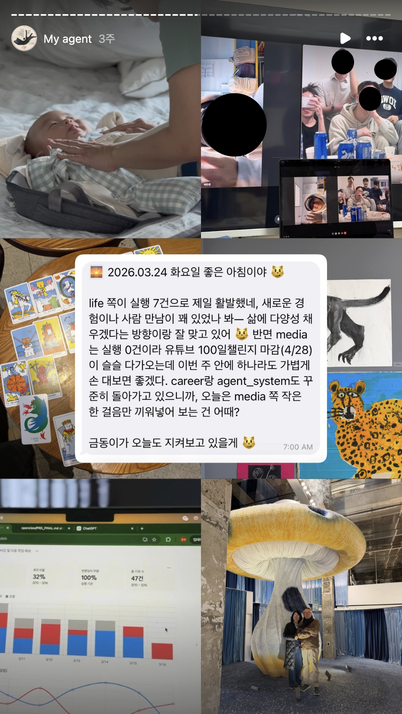

100일간의
에이전트 탐구
2026년 1월에 퇴사하면서 100일이라는 탐구 기간을 스스로에게 줬어요. 포트폴리오를 정리하는 대신, 회고 에이전트 금동이봇을 직접 만들면서 디자이너의 일이 어떻게 변하는지를 손으로 확인해보고 싶었거든요.
100일이라는 탐구 기간
2026년 1월에 퇴사하면서, 100일이라는 탐구 기간을 스스로에게 줬어요. 포트폴리오를 먼저 정리하는 대신 파이썬으로 개인 회고 에이전트를 직접 만들어보기로 했습니다. 소재는 10년 동안 꾸준히 해오던 회고였어요.
텔레그램에 던진 메시지를 LLM이 태깅하고, 상태를 계산하고, 정책에 따라 응답하거나 침묵하고, 회고를 생성하는 파이프라인을 만들었습니다. 그리고 매일 직접 사용하면서, 회고가 꾸준히 이어지는지 그리고 실제로 행동이 바뀌는지를 5주 동안 검증했어요.
처음 구현한 데이터 구조
처음 만든 입력 화면은 정말 단순했어요. 텔레그램에 해시태그로 #기획 작업 끝 같은 식으로 적으면, 그게 구글 시트에 들어가는 정도였습니다. 화면 자체로는 보여줄 게 거의 없는데도, 그 뒤에서 판단이 메시지마다 다르게 일어나고 있다는 게 새삼 신기했어요.

LLM이 해석한 데이터
매일 아침이면 어제 데이터를 LLM이 분석해서 메시지를 보내줬습니다. "어제는 회피가 좀 많았네"라든가 "기획 작업이 잘 흐르고 있어" 같은 식으로요. 같은 데이터를 보고도 매번 다르게 해석되는 글이 도착했어요.

직접 만들어보고서야 보인 것들이 있어요. 인터페이스는 텔레그램 창 하나로 고정이지만, 그 뒤의 판단은 메시지마다 새로 짜여요. 디자이너가 설계해야 할 대상이 이 화면에서 저 화면으로의 이동이 아니라, 지금 말을 걸지 침묵할지로 바뀝니다. 측정해야 할 지표도 버튼 클릭률이 아니라 '개입이 적절했는가'로 옮겨가요.
보이지 않는 것을 보이게 만든다는 디자이너의 일은 그대로 남아있어요. 다만 보여져야 할 대상과 전달 방식이 다른 모양으로 변하고 있는 거죠. 이 프로젝트는 그 변화를 손에 잡히게 만들어보고 싶었던 시도였습니다.
화면에서 상태로
화면을 그리던 일이 갑자기 다른 모양이 됐어요. 제가 만들고 있던 걸 정리해보면 이런 식이었습니다.
| 과거 | 현재 |
|---|---|
| 화면 (Screen) | 상태 (State) |
| 유저 플로우 | 판단 정책 |
| 에러 메시지 | 개입 강도 |
| Figma | Python · LLM · Git · Sheets |
무게중심이 화면에서 상태로, 플로우에서 정책으로, 에러 메시지에서 개입 강도로 이동했어요. 도구도 Figma 한 화면으로 끝나지 않고, 코드와 LLM과 데이터 시트가 동시에 살아 움직였습니다.
13년 동안 변하지 않은 디자이너의 일
브랜드 디자인, 그래픽, 웹 에이전시 PM, B2B SaaS 프로덕트 디자인, 프리랜서까지 13년 동안 분야는 계속 바뀌었습니다. 그런데 분야가 바뀌어도 변하지 않는 디자이너의 일이 있다고 늘 느꼈어요.
사용자가 원하는 것은 무엇이고, 그 제품의 진짜 매력을 어떻게 전달할 것인가. 보이지 않는 것을 보이게 하는 것이 디자이너의 일이라고 생각해 왔습니다.
2025년 후반부터 AI 에이전트, 오픈클로, 자연어 인터페이스 같은 도구들이 빠르게 퍼지는 걸 보면서, 그 본질이 어떻게 바뀔지 다시 들여다보고 싶어졌어요. 고정된 UI에서 사용자가 정해진 옵션을 선택하던 방식에서, 자기 말로 자유롭게 던지면 시스템이 해석하고 돌려주는 방식으로. 통제권의 위치가 옮겨가는 변화였거든요.
다만 머리로 아는 것과 직접 만들어보는 건 완전히 다른 일이더라구요. 관찰만으로는 사용자에게 필요한 전달이 어떻게 달라지는지 감이 잡히지 않았어요. 그래서 포트폴리오보다 먼저, 이 변화를 직접 만들면서 이해해보기로 했습니다.
- 두 달 공백이었던 회고가 5주 동안 매일 이어졌어요. 저녁 회고 39회 발송, 31회 응답(79%). 도구가 환경으로 넘어간 가장 분명한 신호였습니다.
- 처음에 정의해둔 네 영역(판단 정확도 / 행동 변화 / 인지부하 / 회고 의미성)을 모두 통과했어요. 다만 영역마다 처음 가설이 빗나간 지점이 따로 있었습니다.
- 가장 인상적이었던 체감은 "마음을 읽는 것 같다"는 한 마디였어요. 데이터 나열을 편지 형식으로 바꾼 뒤에 처음 나온 반응이었습니다.
- 입력 (Input) 사용자가 자연어로 던진 raw 데이터를 그대로 저장합니다.
- 상태 (State) 최근 N일 데이터로 지금 어떤 흐름인지 계산해요.
- 정책 (Policy) 언제 말하고 언제 침묵할지 정해둔 룰에 따라 반응 강도를 결정합니다.
- 실행 (Execution) 상태와 정책의 조합으로 개입을 수행해요.
- 학습 (Learning) 주기적으로 패턴을 분석해 정책을 조정합니다.
- 태그 입력에서 raw 입력으로. 인간이 분류해서 시스템에 넣는 방식에서, 인간이 raw로 던지면 시스템이 분류하는 방식으로.
- 확정적 화면에서 가변적 정보로. 대시보드를 만드는 대신, 질문이 들어온 순간에 응답을 다시 짜요.
- 친밀감을 부여하는 작업. 개인 에이전트는 범용 브랜딩보다 사용자 맥락에 닿는 사적인 디테일에서 더 강하게 작동합니다.
- 과도한 개입 방지. 침묵의 설계가 발화의 설계보다 어려울 때가 많아요.